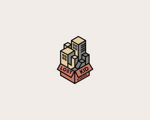

Trade Mark Journal No.2025/046 14 November 2025
UK00004287858 1 November 2025 (35,41)

- Class 35
- Film directing of advertising films; Cinematographic film advertising; Production of advertising films; Producing promotional videotapes, video discs, and audio visual recordings; Video recordings for marketing purposes (Production of -); Production of video recordings for marketing purposes; Post-production editing of advertising or commercials; Production of video recordings for advertising purposes; Video recordings for advertising purposes (Production of -); Production of video recordings for publicity purposes; Video recordings for publicity purposes (Production of -); Promotional marketing services using audiovisual media; Demonstration of photographic equipment [for advertising purposes]; Advertising for motion picture films; Promoting services for baseball game; Radio advertising; Radio and television advertising; Production of television and radio advertisements; Production of radio commercials; Audience rating determination for radio and television broadcasts; Production of radio advertisements; Radio advertising and commercials; Production and distribution of radio and television commercials; Distribution of advertising mail and of advertising supplements attached to regular editions; Publication of advertising texts; Editing of publicity texts; Advertising text publication services; Issuing and updating of advertising texts; Compilation of advertisements for use as web pages; Distribution of printed promotional material by post; Compilation of directories for publishing on the internet; Compilation of directories for publication on the internet; Publication of advertising literature; Texts (Publication of publicity -); Writing of publicity texts; Publicity texts (Writing of -); Texts (Writing of publicity -); Writing of business project reports; Marketing in the framework of software publishing; Copywriting; Writing of business project studies; Online retail services for downloadable and pre-recorded music and movies; Promotion of musical concerts; Retail services relating to live animals; Production of sound recordings for publicity purposes; Production of sound recordings for marketing purposes; Production of sound recordings for advertising purposes; Subscriptions (arranging of) to books, reviews, newspapers or comic books; Book club services retailing books to its members; Compilation of business directories for publishing on the Internet; Publicity publication services; Publication of publicity texts; Publicity texts (Publication of -); Arranging and conducting trade shows relating to publishing; Publication of publicity materials on-line; Publication of publicity materials; Business reports (Writing of -); Writing of business reports; Publication of publicity material; Compilation of directories for publishing on global computer networks or the internet; Market research services for publishers; Trade information; Organization of trade fairs; Organisation of trade fairs; Arranging of trade fairs; Trade marketing [other than selling]; Advice relating to barter trade; Trade promotional services; Foreign trade information and consultation; Organizing of trade shows; Promotion of fairs for trade purposes; Arranging of trade shows; Shows (Arranging trade -); Trade shows (Arranging of -); Foreign trade consultancy services; Trade show and exhibition services; Trade shows (Conducting of -); Shows (Conducting trade -); Conducting of trade shows; Conducting, arranging and organizing trade shows and trade fairs for commercial and advertising purposes; Trade show management services; Foreign trade information (Provision of -); Provision of foreign trade information; Chamber of commerce services for the promotion of trade; Trade show and commercial exhibition services; Provision of trade information; Trade information (Provision of -); Organisation of trade fairs for advertising purposes; Trade fair (Organization of -) for commercial or advertising purposes; Arranging of exhibitions for trade purposes; Exhibitions (Arranging -) for trade purposes; Organization of trade fairs for commercial or advertising purposes; Trade fairs (Organization of -) for commercial or advertising purposes; Arranging and conducting trade fairs; Exhibitions (Conducting -) for trade purposes; Arranging of demonstrations for trade purposes; Organisation of trade fairs for commercial or advertising purposes; Mediation of trade business for third parties; Organization of exhibitions and trade fairs for commercial or advertising purposes; Organisation of exhibitions and trade fairs for business and promotional purposes; Providing trade information; Arranging of displays for trade purposes; Services for provision of foreign trade information; Foreign trade information (Services for the provision of -); Organisation of exhibitions and trade fairs for commercial and advertising purposes; Organisation of exhibitions and trade fairs for commercial or advertising purposes; Promoting and conducting trade shows; Arranging of presentations for trade purposes; Compilation and provision of trade and business price and statistical information; Organisation of trade fairs and exhibitions for commercial or advertising purposes; Organisation of exhibitions or trade fairs for commercial or advertising purposes; Market information services relating to trade reports; Arranging and conducting commercial trade shows; Conducting trade shows in the field of automobiles; Preparation of trade publicity texts; Arranging and conducting trade shows; Conducting virtual trade show exhibitions online; Arranging and conducting trade show exhibitions; Arranging of trading transactions and commercial contracts; Arranging of contractual [trade]services with third parties; Planning and conducting of trade fairs, exhibitions and presentations for economic or advertising purposes; Business management for a trade company and for a service company; Planning and conducting of trade fairs, exhibitions and presentations for commercial or advertising purposes; Consultancy regarding the organization or managing of a trade company; Labour exchange services; Promoting the goods and services of others through the administration of sales and promotional incentive schemes involving trading stamps; Sales promotion for others through trading stamp schemes; Goods import-export agencies; Negotiation of business contracts for others; Production of cinema commercials; Business project management services for construction projects; Project studies for businesses; Management of business projects [for others]; Promotional advertising for exploration projects; Business project management; Business project management services; Preparation of project studies relating to business matters; Project studies relating to business matters (Preparation of -); Creative marketing plan development services; Career advisory services (other than education and training advice); School fee accounting services; School fee cost accounting services; Arranging of contracts for others for the buying and selling of goods; Arranging business introductions relating to the buying and selling of products; Arranging of buying and selling contracts for third parties; Telephone marketing services [not selling]; Arranging the buying of goods for others; Procuring of contracts for the purchase and sale of goods; Carrying out auction sales; Arranging of auction sales; Auction sales (Arranging of -); Arranging of collective buying; Conducting of auction sales; Sales promotions at point of purchase or sale, for others; Arranging of contracts for the purchase and sale of goods and services, for others; Preparation of mailing lists for direct mail advertising services [other than selling]; Media buying services; Provision of an online marketplace for buyers and sellers of goods and services; Negotiation of contracts relating to the purchase and sale of goods; Promoting the goods and services of others by distributing coupons; Provision of an on-line marketplace for buyers and sellers of goods and services; Providing online marketplaces for sellers of goods and or services; Mediation of contracts for purchase and sale of products; Promoting the sale of goods and services of others by awarding purchase points for credit card use; Marketing the goods and services of others by distributing coupons; Promoting the sale of goods and services of others through the distribution of printed material and promotional contests; Promoting the sale of fashion goods through promotional articles in magazines; Promoting the sale of goods and services of others through promotional events; Procurement of contracts for the purchase and sale of goods and services for others; Advertising automobiles for sale by means of the Internet; Advertising services relating to the sale of goods; Arranging and conduction of auction sales; Sales prospecting for others; Promoting the sale of the services [on behalf of others] by arranging advertisements; Arranging and conducting of real estate auctions; Advertising services for promoting the brokerage of stocks and other securities; Advertising services to promote the sale of beverages; Purchasing services; Business intermediary and advisory services in the field of selling products and rendering services; Procurement of contracts for the purchase and sale of goods and services; Purchasing of goods and services for other businesses; On-line trading services in which seller posts products to be auctioned and bidding is done via the Internet; Promoting the goods and services of others through the distribution of discount cards; Market analysis services relating to the sale of antiques; Procurement of contracts for others relating to the sale of goods; Market prospecting; Arranging commercial transactions, for others, via online shops; Arranging and conducting sales events for others of livestock and registered and commercial cattle; Provision of online marketplaces for buyers and sellers of goods and services which are authenticated by non-fungible tokens; Consultancy relating to costing of sales orders; Market analysis services relating to the sale of goods; Advertising services relating to the sale of personal property; Promoting the goods and services of others through infomercials; Arranging and conducting sales events for cattle; Arranging advertising and promotional contracts for others; Inventorying merchandise; Providing advice relating to the analysis of consumer buying habits; Mail-order advertising; Promoting the goods and services of others by arranging for sponsors to affiliate their goods and services with sporting activities; Retail service connected with the sale of power tools via a distributorship; Developing promotional campaigns for business; Retail services connected with the sale of furniture; Alcoholic beverage procurement services for others [purchasing goods for other businesses]; Sales promotion for others; Mediation of agreements regarding the sale and purchase of goods; Promoting the goods and services of others by arranging for sponsors to affiliate their goods and services with sports competitions; Arranging and conducting sales events for livestock; Arranging advertising contracts for others; Advice relating to the sale of businesses; Advertising of the goods of other vendors, enabling customers to conveniently view and compare the goods of those vendors; Modeling for advertising or sales promotion; Promoting the goods and services of others by means of a preferred customer program; Promoting the artwork of others by means of providing online portfolios via a website; Modelling for advertising or sales promotion; Retail services connected with the sale of subscription boxes containing beers; Retail services connected with the sale of subscription boxes containing cosmetics; Business assistance relating to starting and running a franchise; Wholesale services in relation to preparations for making beverages; Direct market advertising; Wholesale services in relation to preparations for making alcoholic beverages; Business management of wholesale and retail outlets; Providing a searchable online advertising guide featuring the goods and services of online vendors; Sales promotion; Promoting the designs of others by means of providing online portfolios via a website; Modeling services for advertising or sales promotion; Arranging and conducting of fairs and exhibitions for business and advertising purposes; Advertising services relating to the sale of motor vehicles; Retail services relating to fake furs; Product merchandising for others; Promoting the goods and services of others over the Internet; Price comparing services; Negotiating and concluding commercial transactions for others; Wholesale services relating to fake furs; Retail services in relation to preparations for making beverages; Recruitment [casting] of actors; Theatrical casting agency; Production of television commercials; Business management of actors; Employment booking services for film television technicians; Employment management services for film television technicians; Casting [recruitment] of performing artists; Auditioning of performing artists [selection of personnel]; Promoting a series of films for others; Talent agency services [business management of performing artists]; Arranging and conducting of television auctions; Arranging and conducting of commercial exhibitions and shows; Shows (Conducting business -); Promoting the music of others by means of providing online portfolios via a website; Advisory services for preparing and carrying out commercial transactions; Model recruitment agencies; Business management of models; Provision of models for advertising; Modelling and models for advertising or sales promotion; Compilation of statistical models for the provision of market dynamics information; Product demonstration services in shop windows by live models; Booking agent services for models; Provision of models for promotional purposes; Modeling agency services; Maintaining a registry of animal breeds; Business management of sports personalities; Publicity; Promotion of sports competitions and events; Advertising and publicity; Publicity and advertising; Arranging and conducting marketing promotional events for others; Rental of all publicity and marketing presentation materials; Publicity agencies; Preparation of publicity publications; Production of commercials; Production of infomercials; Production of advertising material; Television advertising; Telephone and television auctions; Business management of entertainment venues; Business consulting; Business consultancy; Business consulting for enterprises; Business planning and business continuity consulting; Business management; Business networking; Consultancy regarding business organisation and business economics; Business organisation; Commercial business management; Business management advice relating to manufacturing business; Business marketing services; Business planning; Business auditing; Business acquisitions; Business marketing consultancy; Business administration; Business management for shops; Business expertise; Business information for enterprises; Business organization consultancy; Business organization consulting; Research (Business -); Business research; Consultancy (Professional business -); Professional business consultancy; Business inquiries; Inquiries (Business -); Business consultancy (Professional -); Business planning services for enterprises; Business promotion; Business strategy services; Business organisation consulting; Business research for new businesses; Business management of restaurants; Business appraisals; Appraisals (Business -); Business appraisal; Professional business consulting; Business Enquiries; Business advisory services relating to business liquidations; Business brokerage services; Business organization and operation consultancy; Business management of hotels; Hotels (Business management of -); Business consultancy to firms; Business consultancy to individuals; Business studies; Business administration consultancy; Business marketing consulting services; Business consulting services; Business management and enterprise organization consultancy; Business management services; Business management and consulting; Business management consulting; Business management of entertainers; Advisory services relating to business management and business operations; Business advice; Business networking services; Business assistance relating to business image; Business organization advice; Business information; Information (Business -); Business invoicing services; Business consultation; Business planning services; Strategic business consultancy; Business management and consultancy; Business management consultancy; Business investigations; Investigations (Business -); Business management organisation; Business appraisals and evaluations in business matters; Business consultancy services; Business administration services; Business analysis; Business management of theaters; Business management of airports; Business planning consultancy; Business merger services; Business surveys; Surveys (Business -); Business assistance; Business investigation; Assistance to commercial enterprises in the management of their business; Business secretarial services; Business organization and management consulting; Business and market research; Business organisation consultancy; Business relocation consulting; Business management and organization consultancy; Professional business consultation relating to the operation of businesses; Business profit analysis; Business research services; Business management of musicians; Administration of the business affairs of franchises; Business intelligence services; Business appraisal services; Business organisation and management consulting; Business promotion services; Professional business consultancy services; Planning concerning business management, namely, searching for partners for amalgamations and business take-overs as well as for business establishments; Business management of hospitals; Business appraisal consultancy; Organisation of exhibitions for business or commerce; Business accounts management; Business expertise services; Business services relating to the establishment of businesses; Business management of an airline company; Management of business [for others]; Business management of retail outlets; Commercial assistance in business management; Business supervision; Business organisation advice; Business organizational consultation; Business process management; Business partnership search; Business management of sports people; Business administrative services for the relocation of businesses; Business representative services; Administration of business affairs; Business research consulting; Business management and consulting services; Business management consulting services; Chartered accountancy business services; Operational business assistance to enterprises; Business management planning; Business marketing consultation services; Consultancy services relating to the procurement of goods and services; Advertising services relating to financial services; Procurement services for others [purchasing goods and services for other businesses]; Procurement services; Personnel services; Secretarial services; Reprographic services; Billing services; Marketing services; Advertising services; Management assistance services; Telemarketing services; Provision of secretarial services; Recruitment services; Invoicing services; Employment consultancy services; Outsourcing services [business assistance]; Businesses (Relocation services for -); Relocation services for businesses; Auctioneering services; Providing advertising services; Benchmarking services; Transcription services; Management accounting; Management consulting; Personnel management; Business organization and management consultancy including personnel management; Management consultancy (Personnel -); Personnel management consultancy; Business management supervision; Business organisation and management consultancy in the field of personnel management; Inventory management; Personnel management consulting; Business administration and management; Business management and administration; Data management; Business management analysis; Database management; Corporate management consultancy; Analysis of business management systems; Management assistance; Hospital management; Management advice; Development of hospital management systems; Risk management consultancy [business]; Inventory management services; Personnel management consultation; Corporate management assistance; Management consultancy services; Commercial management; Cost management accounting; Personnel management services; Business management and consultation; Business management consultation; Marketing management advice; Personnel resources management; Interim business management; Consultancy relating to personnel management; Consultancy relating to the management of personnel; Personnel management advice; Assistance (Business management -); Assistance with business management; Business management assistance; Business process management consultancy; Business risk management services; Condominium management; Personnel management consultancy services; Database management services; Business process management and consulting; Corporate management consultancy services; Consultancy relating to business management; Business management advice; Personnel management and employment consultancy; Business records management; Data management services; Sales management services; Stock management services; Business management consultancy in the field of executive and leadership development; Personnel management of marketing personnel; Advisory services for business management; Business management advisory services; Management (Advisory services for business -); Production of visual advertising matter; Development of marketing concepts; Business management of musical performers; Development of advertising concepts; Digital marketing; Design of advertising materials; Development of marketing strategies and concepts; Design of advertising logos; Advertising copywriting; Business management of performing artists; Artists (Business management of performing -); Direct marketing consulting; Advertising services to create brand identity for others; Advertising services to create corporate and brand identity; Professional consultancy relating to marketing; Business management of authors and writers; Creating advertising material; Provision of nominee company directors; Recruitment of executive staff; Selection of executive personnel; Executive recruitment services; Executive placement services; Executive recruiting services; Executive selection services; Management of an airline company; Executive search services; Marketing consultancy; Personnel consultancy; Marketing agency services; Employment agency services for personnel in general office positions; Consultancy and advisory services relating to personnel management; Marketing consulting; Professional consultancy relating to personnel management; Advertising, marketing and promotional consultancy, advisory and assistance services; Consultancy regarding public relations communications strategy; Executive search and placement services; Consultancy regarding advertising communications strategy; Marketing advisory services; Staff recruitment consultancy services; Business management and organisation consultancy; Business management organisation consultancy; Business organisation and management consultancy; Job agency services for medical personnel; Company management, including consultancy in demographic matters; Consultancy of personnel recruitment; Personnel recruitment consultancy; Assistance, advisory services and consultancy with regard to business organization; Executive search and selection services; Personnel placement consultancy; Business management consultancy and advisory services; Consultancy and advisory services for business management; Company office secretarial services; Advertising and marketing consultancy; Assistance, advisory services and consultancy with regard to business management; Consultancy and advisory services relating to personnel recruitment; Business management and organization consultancy services; Consultancy services in the field of affiliate marketing; Assistance and consultancy relating to business management and organisation; Personnel recruitment agency services; Scriptwriting for advertising purposes; Preparing audiovisual presentations for use in advertising; Writing of curriculum vitae for others; Blogger outreach services; Writing of résumés for others; Production of advertising matter and commercials; Advertising services of a radio and television advertising agency; Rental of advertisement billboards; Distribution of advertisements and commercial announcements; Hire of advertising billboards; Leasing of advertising billboards; Advertising; Rental of billboards [advertising boards]; Advertisement and publicity services by television, radio, mail; Advertising services provided by a radio and television advertising agency; Advertising and advertisement services; Advertising of cinemas; Production of teleshopping programs; Promotion [advertising] of concerts; Preparation of advertising campaigns; Exhibitions for commercial or advertising purposes; Advertising for others; Compilation of advertisements; Advertising agencies; Advertising and marketing; Cinema advertising; Preparation of advertisements; Advertising and promotional services; Promotional and advertising services; Promotional advertising services; Rental of advertisement hoardings; Leasing of advertising hoardings; Advertising, marketing and promotional services; Marketing, advertising, and promotional services; Advertising, promotional and marketing services; Online advertisements; Organization of events, exhibitions, fairs and shows for commercial, promotional and advertising purposes; Advertisements (Preparing of -); Rental of advertisement space and advertising material; Banner advertising; Hire of advertising hoardings; Newspaper advertising; Magazine advertising; Rental of advertisement space; Recruitment advertising; Electronic billboard advertising; Arrangement of advertising; Online advertising; On-line advertising; Response advertising; Classified advertising; Copywriting for advertising and promotional purposes; Rental of advertising space on the Internet for employment advertising; Promotion, advertising and marketing of on-line websites; Advertising consultation; Advertising flyer distribution; Organisation of exhibitions for commercial and advertising purposes; Organisation of exhibitions for commercial or advertising purposes; Design of advertising flyers; Arranging of advertising in cinemas; Promotional advertising carried out via the telephone; Brand creation services (advertising and promotion); Design of advertising brochures; Press advertising consultancy; Advertising analysis; Organisation of events for commercial and advertising purposes; Advertisement for others on the Internet; Advertising and publicity services; Organisation of customer loyalty programs for commercial, promotional or advertising purposes; Advertising research; Organisation and holding of fairs for commercial or advertising purposes; Promotion [advertising] of travel; Promotion [advertising] of business; Rental of advertising material; Outdoor advertising; Pay per click advertising; Advertising services by means of television screen based text; Rental of advertising space on-line; Advertising and promotion services; Elevator advertising; Dissemination of advertisements and of advertising material [flyers, brochures, leaflets and samples]; Graphic advertising services; Mediation of advertising; Advertising, marketing and promotion services; Marketing, advertising and promotion services; Distribution of advertising, marketing and promotional material; Organisation of prize draws for advertising purposes; Advertisements (Placing of -); Advertising, including on-line advertising on a computer network; Direct mail advertising; Advertising via the Internet; On-line advertising and marketing services; Promotional marketing; Organising exhibitions for commercial or advertising purposes; Rental of advertising time in cinemas; Online advertising services; Rental of advertising space; Advertising space (Rental of -); Distribution of advertising brochures; Analysis of advertising response; Promotional advertising relating to philosophical instruction; Press advertising services; Organisation of exhibitions and events for commercial or advertising purposes; Consultancy relating to advertising; Advertisement via mobile phone networks; Composing advertisements for use as webpages; Rental of advertising space on the internet; Advertising space (Rental of -) on the internet; Advertising flyer distribution for others; Classified advertising services; Advertising and marketing services; Placement of design staff; Retail services for works of art provided by art galleries; Retail services in relation to works of art; Organization of art exhibitions for commercial or advertising purposes; Wholesale services in relation to works of art; Retail services in relation to art materials; Arranging and conducting of art exhibitions for commercial or advertising purposes; Retail services in relation to downloadable virtual works of art; Wholesale services in relation to art materials; Online retail services in relation to downloadable virtual works of art; Reproduction of drawings; Preparation and presentation of audio visual displays for advertising purposes; Publication of printed matter for advertising purposes; Corporate image studies; Fashion shows for promotional purposes (Organization of -); Organization of fashion shows for promotional purposes; Publication of printed matter for advertising purposes in electronic form; Organisation of fashion shows for commercial purposes; Electronic publication of printed matter for advertising purposes; Audio-visual displays for advertising purposes (Preparation or presentation of -); Preparation of audio and/or visual displays for businesses; Marketing; Providing marketing consulting in the field of social media; Online marketing; Advertising and marketing services provided by means of social media; Internet marketing; Influencer marketing; Sales promotion using audiovisual media; Consultancy services relating to advertising, publicity and marketing; Marketing research services; Research services relating to advertising and marketing; Dissemination of advertising, marketing and publicity materials; Financial marketing; Advertising and marketing services provided via communications channels; Marketing analysis services; Advertising services to promote public awareness of social issues; Marketing information; Affiliate marketing; Marketing services relating to esports events; Product marketing; Marketing studies; Advertising services to promote public awareness in the field of social welfare; Media relations services; Providing business information in the field of social media; Direct marketing services; Referral marketing; Advertising services for the promotion of e-commerce; Marketing research; Digital advertising services; Design of marketing surveys; Political advertising services; Advertising, promotional and public relations services; Search engine marketing services; Consulting services in the field of Internet marketing; Recruitment services for sales and marketing personnel; Dissemination of advertising via online communications networks; Online business networking services; Planning of marketing strategies; Marketing analysis; Planning services for marketing studies; Organisation of promotions using audio-visual media; Organisation of promotions using audiovisual media; Marketing advice; Business consultancy services relating to the marketing of fund raising campaigns; Event marketing; Analysis of marketing trends; Presentation of financial products on communication media, for retail purposes; Development of business organization strategies relating to corporate social responsibility; Promotional management for sports personalities; Marketing services in the field of web site traffic optimization; Marketing consultation services; Promotional management of celebrities; Information or enquiries on business and marketing; Development of promotional campaigns; Marketing the goods and services of others; Investigations of marketing strategy; Database marketing; Publicity and sales promotion services; Providing marketing information via websites; Advertising of business web sites; Advertising services for the promotion of beverages; Publicity and promotional services; Marketing assistance; Advertising services to promote public awareness of environmental matters; Advertising services to promote public awareness of environmental issues and initiatives; Advertising services to promote public awareness of medical issues; Advertising services to promote public awareness of medical conditions; Rental of advertising time on communication media; Retail services via global computer networks related to beer; Promoting the goods and services of others via computer and communication networks; Administration of cultural and educational exchange programs; Career networking services; Corporate identity services; Promoting the goods and services of others via a global computer network; On-line advertising on computer communication networks; Advertising via electronic media and specifically the internet; Economic studies for business purposes; Provision of advertising space on electronic media; Provision of business information via global computer networks; Retail purposes (Presentation of goods on communication media, for -); Presentation of goods on communication media, for retail purposes; Communication media (Presentation of goods on -), for retail purposes; Market research services relating to broadcast media; Presentation of companies on the Internet and other media; Arranging subscriptions to information media; Advertising in the popular and professional press; Provision of advertising space, time and media; Presentation of goods on communications media, for retail purposes; Arranging subscriptions to media packages; Provision and rental of advertising space, time and media; Promotion of special events; Promotion services relating to esports events; Advertising services relating to esports events; Arranging promotion of charitable fundraising events; Conducting of commercial events; Promotion of goods and services through sponsorship of sports events; Arranging and conducting of promotional events; Sample distribution; Handbill distribution; Distribution of samples; Samples (Distribution of -); Distribution of advertising material; Distribution of advertising samples; Distribution of advertising leaflets; Distribution of publicity leaflets; Distribution of advertising materials; Distribution of promotional leaflets; Distribution of promotional material; Distribution of advertising matter; Distribution of advertising announcements; Publicity brochure distribution; Distribution of promotional matter; Distribution of samples for publicity purposes; Distribution of prospectuses and samples; Arranging the distribution of advertising samples; Distribution of samples for advertising purposes; Distribution of publicity texts; Distribution of products for advertising purposes; Distribution of prospectuses for advertising purposes; Distribution of printed advertising matter; Distribution of prospectuses and samples for advertising purposes; Distribution of advertising material by post; Distribution and dissemination of advertising materials [leaflets, prospectuses, printed material, samples]; Distribution of flyers, brochures, printed matter and samples for advertising purposes; Sales promotion for others provided through the distribution and the administration of privileged user cards; Arranging the distribution of advertising literature in response to telephone enquiries; Arranging the distribution of advertising samples in response to telephone enquiries; Distribution of publicity materials, namely, flyers, prospectuses, brochures, samples, particularly for catalogue long distance sales [whether crossborder or not]; Compilation, production and dissemination of advertising matter; Distribution of publicity materials (flyers, prospectuses, brochures, samples, particularly for catalogue long distance sales) whether cross border or not; Hiring of publicity materials; Drafting of publicity material; Management of performing artists; Agency services for promoting sports personalities; Competitive intelligence services; Human resources management and recruitment services; Employment recruiting consultancy; Employment booking services for performing artists; Management of professional athletes; Business management of professional athletes; Recruitment of high-level management personnel; Employment agency services for people skilled in the use of computers; Recruitment consultants in the financial services field; Human resources consultancy; Employment recruiting services; Business consultancy services relating to product development; Consulting services in the field of development of advertising concepts; Business strategy development services; Business advisory services relating to product development; Brand strategy services; Marketing plan development ; Brand evaluation services; Business organisation and management consulting services; Consulting services in business organization and management; Brand creation services; Consultancy and advisory services in the field of business strategy; Professional consultancy relating to business management; Consulting services relating to marketing; Business consulting services for digital transformation; Acquisitions (Business -) consulting services; Business management and consultancy services; Business management consultancy services; Providing advice in the field of business management and marketing; Business management and organisation consultancy services; Business management consulting services in the field of information technology; Development and implementation of marketing strategies for others; Consultancy relating to marketing; Business advisory services relating to product manufacturing; Corporate image development consultation; Business consultancy services relating to manufacturing; Consultancy and advisory services relating to business management; Consultancy relating to business management and organisation; Business management consultancy in the field of corporate travel; Advice in the field of business management and marketing; Consultancy relating to business planning; Business consultancy services for digital transformation; Brand testing; Brand positioning; Brand positioning services; Development of concepts for business economy; Development of market surveys; Assistance in product commercialization, within the framework of a franchise contract; Providing assistance in the field of product commercialization within the framework of a franchise contract; Product merchandising; Career placement consulting services; Business consultancy and advisory services; Business advisory and consultancy services; Tax preparation and consulting services; Assistance, advisory services and consultancy with regard to business planning; Career planning consultancy; Business consulting services in the agriculture field; Consulting services relating to publicity; Assistance, advisory services and consultancy with regard to business analysis; Personal management consultancy services; Advisory and consultancy services relating to import-export agencies; Employment consultancy; Business advice and consultancy relating to franchising; Business recruitment consultancy; Consultancy relating to auditing; Business advice relating to marketing management consultations; Consultancy relating to business analysis; Promotion services; Publicity and sales promotion; Management assistance for promoting business; Sales promotion services; Publicity personnel management services; Advisory services relating to sales promotion; Organization of fashion parades for sales promotion purposes; Business consultancy services relating to the promotion of fund raising campaigns; Promotion of goods and services through sponsorship of international sports events; Administration of sales promotion incentive programs; Computerised business promotion; Modelling agency services for sales promotion purposes; Advertising and promotion services and related consulting; Sales account management; Consultancy relating to advertising and promotion services; Consultations relating to business promotion; Organization, operation and supervision of sales and promotional incentive schemes; Organisation and management of customer loyalty programs; Business consultancy services relating to management of fund raising campaigns; Provision of business management information; Organisation, operation and supervision of sales and promotional incentive schemes; Advisory services relating to business organisation and management; Assistance in management of business activities; Organisation and management of business incentive and loyalty schemes; Management of customer loyalty, incentive or promotional schemes; Advisory services and information in business organization and management; Personnel management for advertising purposes; Consultancy relating to management selection; Providing assistance in the field of business promotion; Export promotion services; Sales promotion services for third parties; Advice relating to marketing management; Advisory services relating to business risk management; Business management of conference centers; Consultancy relating to the organisation of promotional campaigns for business; Provision of business management assistance; Providing assistance in the field of business management and planning; Modelling agency services relating to sales promotions; Advice relating to the organisation and management of business; Recruitment and personnel management services; Sales promotion through customer loyalty programs; Advertising, including promotion of products and services of third parties through sponsoring arrangements and licence agreements relating to international sports' events; Promotion of goods and services through sponsorship; Consultancy relating to business document management; Advisory services relating to business management; Business management and consultation services; Management assistance in business affairs; Sales promotion for third parties; Prize draws (Organising of -) for promotional purposes; Promotion of goods through influencers; Advertising particularly services for the promotion of goods; Promotion of insurance services, on behalf of third parties; Prize draws (Organising of -) for advertising purposes; Arranging and conducting of marketing events; Promotion of financial and insurance services, on behalf of third parties; Arranging and conducting of advertising events; Promotional advertising relating to philosophical training; Targeted marketing; Direct marketing; Advertising and marketing services provided by means of blogging; Marketing forecasting; Consultancy regarding advertising communication strategies; Evaluating the impact of advertising on audiences; Business advice relating to strategic marketing; Analysis of the public awareness of advertising; Online advertising network matching services for connecting advertisers to websites; Marketing services in the field of travel; Marketing services provided by means of digital networks; Advertising services for the literary industry; Market campaigns; Developing promotional campaigns for businesses; Real estate marketing analysis; Business advice relating to marketing; Marketing (Business advice relating to -); Advertising agency services; Marketing through product placement for others in virtual environments; Marketing research and analysis; Marketing research or analysis; Public relations; Public relations agency; Public relations services; Public relations consultancy; Public relations studies; Consultancy relating to public relations; Advisory services relating to public relations; Assistance to management in commercial enterprises in respect of public relations; Consultancy regarding public relations communication strategies; Conducting studies in the field of public relations; Public opinion polling services; Public opinion surveys; Advertising services relating to public works; Public opinion polling; Public opinion polls (Operating of -); Advisory services (Business -) relating to the management of public sector businesses; Preparation of public opinion surveys; Conducting public opinion polls; Public opinion polls (Conducting of -); Design of public opinion surveys; Services with regard to product presentation to the public; Administration of foreign business affairs; Advertising services to promote public awareness of the benefits of shopping locally; Advertising through all public communication means; Help in the management of business affairs or commercial functions of an industrial or commercial enterprise; Business administration services in the field of transportation; Business assistance relating to corporate identity; Advertising services to promote public awareness of nephrotic syndrome and focal segmental glomerulosclerosis [FSGS]; Assistance to management in commercial enterprises in respect of advertising; Corporate communications services; Consultations relating to business advertising; Administration of the business affairs of retail stores; Advisory services relating to corporate identity; Advisory services relating to business administration; Publicity agency services; Evaluations relating to business management in commercial enterprises; Management administration of commercial undertakings; Evaluations relating to business management in professional enterprises; Conducting of internal business communication surveys; Retail services connected with the sale of clothing and clothing accessories; Consultancy relating to business advertising; Customer loyalty services for commercial, promotional and/or advertising purposes; Business advertising services relating to franchising; Consumer profiling for commercial or marketing purposes; Business merchandising display services; Providing business marketing information; Advertising planning; Consultancy relating to demographics for marketing purposes; Business consultation relating to advertising; Customer club services, for commercial, promotional and/or advertising purposes.
- Class 41
- Film and video tape film production; Film production, other than advertising films; Film production; Film directing, other than advertising films; Film studios; Cinematographic film showings; Film showings; Video film production; Production (Videotape film -); Videotape film production; Film editing; Production of cinema films; Film editing (Cinematographic -); Production of television and cinema films; Film distribution; Video and DVD film production; Film rental; Production of films, other than advertising films; Production of pre-recorded cinema films; Production of cinematographic films; Production of films; Production of video films; Production of television films; Cinematographic film studio services; Video tape film production; Production of film studies; Film editing (Photographic -); Film hire; Motion picture film production; Television, radio and film production; Rental of cinema films; Exhibition of cine films; Film studio services; Conducting of film festivals; Rental of film negatives; Rental of film studios; Exhibition of video films; Film production services; Rental of film projectors; Rental of lighting apparatus for movie sets or film studios; Entertainment by film; Rental of cinematographic films; Movie theaters; Production of films in studios; Showing of cinematographic films; Movie studios; Studios (Movie -); Presentation of films; Recording, film, video and television studio services; Hire of film projectors; Operating of film studios; DVD and CD-ROM film production; Rental of reversal film; Rental of video films; Production of pre-recorded video films; Shows and films production; Rental of film positives; Production of motion picture films; Performance of films; Consultancy on film and music production; Rental of cinematographic and motion picture films; Exhibition of video film sound tracks; Video taping; Production of video tapes and video discs; Video editing; Video production; Video tape editing; Editing of video recordings; Audio and video production, and photography; Audio and video recording services; Video tape production; Video game services; Video recording services; Providing age ratings for television, movie, music, video and video game content; Audio, film, video and television recording services; Production of video and audio recordings; Production of video recordings; Audio, video and multimedia production, and photography; Audio and video editing services; Rental of video recordings; Rental of video games; Rental of video cameras; Video cameras (Rental of -); Production of video cassettes; Services for the showing of video recordings; Rental of video tapes; Rental of video tapes and motion pictures; Providing audio or video studios; Video arcade services; Hire of video recordings; Video cassette rental; Rental of video game apparatus; Rental of video cassettes; Video cassettes (Rental of -); Rental of video screens; Rental of video recorders; Video recorders (Rental of -); Video game arcade services; Video and audio rental services; Aerial videography services; Post-production editing services in the field of music, videos and film; Photography; Photography services; Video editing services for events; Aerial photography; Sound recording and video entertainment services; Macro photography services; Studio services for the recording of videos; Recording studio services for videos; Portrait photography services; Video entertainment services; Providing audio or video studio services; Photography instruction; Video production services; Digital video, audio and multimedia entertainment publishing services; Video imaging services by drone; Entertainment services for sharing audio and video recordings; Videotape editing; Editing (Videotape -); Photographer services; Rental services for audio and video equipment; Provision of video recording studio services; Services for the production of entertainment in the form of video; Photographic imaging services by drone; Editing of audio recordings; Recording studio services for films; Audio recording studio services; Special effects animation services for film and video; Aerial photography via drones; Audio recording and production services; Video rental services; Music recording studio services; Audio recording services; Entertainment services for matching users with audio and video recordings; Cinematographic entertainment services; Video equipment hire; Production of entertainment in the form of video tapes; Hire of video recorders; Studio services (Recording -); Recording studio services; Education services relating to photography; Photo editing; Rehearsal [recording] studio services; Production of sound and video recordings; Production of educational sound and video recordings; Audio entertainment services; Rental of sound and video recordings; Sound recording studio services; Scriptwriting services; Production of video tapes for corporate use in management educational training; Portrait photography; Production of video tapes for corporate use in corporate educational training; Audio production services; Lighting productions for entertainment purposes; Services in the production of animated motion picture entertainment; Studio services for the recording of cine-films; Publication of photographs; Leasing of motion picture cameras; Motion picture (Rental of -); Motion picture rental; Motion picture studio services; Motion picture studios; Portrait painting; Editing of printed matter containing pictures, other than for advertising purposes; Motion picture production; Rental of motion pictures; Motion pictures (Rental of -); Motion picture song production; Photograph library searching services; Leasing of motion pictures; Showing of cinematographic and motion picture films; Production of motion pictures; Arcade game services; Game shows; Rental of video game consoles; Rental of arcade video game machines; Poker game services; Game services; Escape game [entertainment]; Computer and video game amusement services; Providing online entertainment in the nature of game tournaments; Organization of soccer games; Production of radio broadcasts; Radio entertainment; Television and radio entertainment; Radio and television entertainment; TV and radio presenter services; Production of television and radio programming; Scheduling of radio and television programmes; Production of television and radio programs; Production of radio or television programs; Production of radio and television programs; Television and radio programming [scheduling]; Production of radio and television programmes; Production of radio and of television programmes; Radio and television programmes (Production of -); Television programmes (Production of radio and -); Production of television or radio programmes; Production of television and radio programmes; Syndication of radio programmes; News programme services for radio or television; Rental of radio and television sets; Radio and television sets (Rental of -); Television sets (Rental of radio and -); Television and radio entertainment services; Radio and television entertainment services; Production of radio programmes; Radio programmes (Production of -); Production of radio programs; Radio entertainment production; Preparation of radio and television programmes; Production of radio and television shows and programmes; Radio programming [scheduling]; Rental of radio and television receiving sets; Performance of radio programmes; Presentation of radio programmes; Radio entertainment services; Editing of radio programmes; Publication and editing of printed matter; Written text editing; Editing of written text; Publication of text books; Publication of manuals; Publication of calendars; Publication of posters; Editing of written texts; Electronic text publishing services; Book and review publishing; Electronic desktop publishing; Publication of texts; Online digital publishing services; Publication of texts in the form of CD-ROMs; Publication of audio books; Publishing; Multimedia publishing of electronic publications; Proof reading of manuscripts; Electronic publishing; Multimedia publishing of journals; Multimedia publishing; Electronic publication; Publishing of electronic publications; Publication of printed directories; Preparation of texts for publication; Online publication of electronic books and journals; Publication of electronic books and journals online; Editing of written texts, other than publicity texts; Publication of multimedia material online; Magazine publishing; Multimedia publishing of books; Publishing of electronic books and journals online; Publishing of scripts for theatrical use; Publishing of maps; Book publishing; Writing and publishing of texts, other than publicity texts; Multimedia publishing of printed matter; Electronic publication of texts and printed matter, other than publicity texts, on the Internet; Publishing, reporting, and writing of texts; Cinematographic adaptation and editing; Editing of audio-tapes; Editing of video-tapes; Editing of cine-films; Editing or recording of sounds and images; Editing of television programmes; Editing of texts (except publicity texts); Screenplay writing; Script writing services; Writing screenplays; Creation [writing] of podcasts; Creation [writing] of educational content for podcasts; Speech writing for non-advertising purposes; Writing of texts; Custom writing services for non-advertising purposes; Publishing services, except printing; Educational services for teaching keyboard writing; Publishing of interactive computer and video game software; Audio recording and production; Multimedia entertainment software publishing services; Song writing services; Publishing of music; Music publishing; Music concerts; Recording of music; Music recording; Music publishing and music recording services; Music performances; Jazz music entertainment services; Production of music concerts; Music education; Presentation of music concerts; Pop music concerts (Organisation of -); Live music concerts; Performance of music; Production of music; Music production; Music concert services; Teaching of music; Performance of music and singing; Tuition in music; Organisation of music concerts; Production of sound and music recordings; Music festival services; Instruction in music; Music instruction; Performing of music and singing; Performance of dance, music and drama; Live music performances; Music entertainment services; Publication of music; Arranging of music performances; Direction of music performances; Music composition services; Organising of festivals relating to jazz music; Composition of music for others; Music composition for others; Live music services; Rental of phonographic and music recordings; Music mixing services; Live music shows; Production of music shows; Arranging of music shows; Artistic management of music venues; Music cassettes (Rental of -); Music library services; Tuition in music appreciation; Music group services; Music performance services; Music production services; Publication of sheet music; Music publishing services; Provision of live music; Music transcription for others; Musical concerts by radio; Musical entertainment; Music competition services; Arranging and conducting of music concerts; Live musical concerts; Publication of music books; Providing digital music from the internet; Music transcription services; Entertainment in the nature of live performances by musical bands; Presentation of musical concerts; Musical concerts by television; Education and training in the field of music and entertainment; Selection and compilation of pre-recorded music for broadcasting by others; Entertainment in the form of recorded music (Services providing -); Musical concert services; Arranging of musical entertainment; Entertainment in the nature of dance performances; Production of musical recordings; Entertainment in the nature of live dance performances; Recording studios; Sound recording studios; Sound recording services; Rental of sound and video recording apparatus; Recording services; Production of audio recordings; Hire of sound recording apparatus; Production of musical works in a recording studio; Recording studio services for television; Recording studio services for the production of sound bearing discs; Rental of acoustic recording equipment; Rental of apparatus for the recording of audio signals; Production of sound recordings; Provision of video recording studio facilities; Rental of tape recording equipment; Production of audio-visual recordings; Rental of recording studios; Rental of apparatus for the recording of video signals; Production of audio master recordings; Rental of audio tapes bearing recorded music; Leasing of phonographic recordings; Production of video and/or sound recordings; Production of audiovisual recordings; Hire of recording studios; Rental of records or recorded magnetic audio tapes for language training; Provision of recording studio services; Rental of audio recordings; Provision of recording studio facilities; Recording studio facilities (Provision of -); Studio facilities (Provision of recording -); Studio recording facilities (Provision of -); Record mastering; Rental of pre recorded video tapes; Live entertainment; Live band performances; Band performances (Live -); Live stage shows; Live demonstrations for entertainment; Production of live shows; Live comedy shows; Rental of sound recordings; Sound recordings (Rental of -); Production of sound and image recordings on sound and image carriers; Rental of sound and image recordings; Production of entertainment in the form of sound recordings; Rental of motion pictures and of sound recordings; Hire of sound reproducing apparatus; Providing digital sound recordings, not downloadable, from the internet; Book rental; Book loaning; Book lending; Publication of books; Books (Publication of -); Electronic book reader rental; Rental of electronic book readers; Publication of books, reviews; Publication of lyrics of songs in book form; Publishing of books; Publishing of books and reviews; Services for the publication of guide books; Publication of year books; Publication of educational books; Publishing of instructional books; Rental of books; Services for the publication of books; Book club services providing information relating to books; Providing online non-downloadable comic books and graphic novels; Publishing of books, magazines; Hire of books; Loan of books; Providing online comic books, not downloadable; Song publishing; Publication of lyrics of songs in sheet form; Gospel choir singing; Singing concert services; Songwriting; Live performances by a musical band; Presentation of live performances by musical bands; Live performances by a musical bands; Production of musical videos; Instruction in singing; Musical performances; Singing education; Presentation of live performances by a musical group; Live musical performances; Presentation of live Christmas musical productions; Publishing of journals; Newspaper publishing; Publishing of newspapers; Publishing of stories; Publishing of newsletters; Publishing of documents; Publishing of medical publications; Publishing services; Multimedia publishing of newspapers; Multimedia publishing of magazines; Publishing of web magazines; Publishing services for books; Publishing of reviews; Publishing services for books and magazines; Publishing of scientific papers; Multimedia publishing of magazines, journals and newspapers; Publishing services (including electronic publishing services); On-line publishing services; Publishing of electronic books and journals on-line; Electronic publishing services; Publishing services for periodical and non-periodical publications, other than publicity texts; Publishing of educational material; Online electronic publishing of books and periodicals; Publishing of printed matter; Publishing of educational matter; Publishing of musical works; Electronic publishing services for others; Publishing a newspaper for customers on the Internet; Publication of journals; Publishing of journals, books and handbooks in the field of medicine; Publishing of magazines in electronic form on the Internet; Publishing by electronic means; Publishing and issuing scientific papers in relation to medical technology; Advisory services relating to publishing; Desk top publishing; Publication of newspapers; Publication of magazines; Magazines (Publication of -); Publication of books relating to entertainment; Publication of electronic books and journals on-line; On-line publication of electronic books and journals; Newspaper publication; Publication of periodicals; Publishing scientific papers in relation to medical technology; Publishing of scientific papers in relation to medical technology; Services for the publication of magazines; Publication of books, magazines, almanacs and journals; Electronic online publication of periodicals and books; Publication of electronic magazines; Publication of textbooks; On-line publication of electronic books and journals (non-downloadable); Publication of periodicals and books in electronic form; Publication services; Publication of electronic books and periodicals on the Internet; Publication of work manuals for business management; Publishing of printed matter relating to french wines; Publication of consumer magazines; Online publication of electronic newspapers; Lending of books and other publications; Publication of catalogs; On-line publication of electronic books and journals [not downloadable]; Publication of educational texts; Electronic publication services; Publication of directories relating to travel; Publication of scientific information journals; Publication of catalogues; Services for the publication of newsletters; Arranging of conventions for trade purposes; Arranging of conferences relating to trade; Arranging of seminars relating to trade; Arranging and conducting of commercial, trade and business conferences; Staff training services relating to the retail trade; Creating animated cartoons; Production of animated cartoons; Production of animated motion pictures; Services in the production of animated motion pictures and television features; Production of a continuous series of animated adventure shows; Production of animated cine-film clips; Production of animated programmes for use on television and cable; Animated musical entertainment services; Entertainment services featuring fictional characters; Production of animated and live action programmes; Production of animation; Production of television game shows; Dubbing for movies; Auditioning for tv game shows; Rental of motion picture and television scenery; Movie showing; Animation production services; Rental of motion picture films; Production of graphical cine-film clips; Theatrical performances both animated and live action; Production of movie special effects; Production of special effects for films; Special effects (Production of -) for films; Movie theater presentations; Rental of movie DVDs; Movie theatre presentations; Rental of movie projectors; Rental of movie props; Movie studio services; Planning of movie shows; Presentation of movies; Cinema theaters; Preparing subtitles for movies; Providing movie theatre facilities; Movie theatre facilities (Providing -); Rental of movie projectors and accessories; Movie projectors and accessories (Rental of -); Rental of films; Rental of movie projectors and their accessories; Motion picture theaters; Rental of pre-recorded films; Film production for entertainment purposes; Movie schedule information services; Production of sporting events for film; Cinema entertainment; Rental and leasing of movie projectors and accessories; Cinema studios; Theater production; Training services in the field of project management; Development of formats for films; Education; Vocational education; Health education; Pre-school education; Education and training; Academies [education]; Education and instruction; Services of schools [education]; Education services; University education services; Education, teaching and training; Academy services (Education -); Education academy services; Academy education services; Vocational education and training services; Religious education; Education (Religious -); Training and education services; Education and training services; Education and instruction services; Education examination; Kindergarten services [education or entertainment]; Provision of education courses; Educational services for providing courses of education; Career counseling [education]; Teaching of diet education; Higher education services; Provision of training and education; Provision of education and training; Providing of education; Physical education; Entertainment, education and instruction services; Education academy services for teaching languages; Education academy services for teaching art history; Education services relating to vocational training; Medical education services; Computer education training; Education information; Information (Education -); Primary education services; Adult education services; Residential education courses; Computer education training services; Linguistic education and training services; Boarding school education; Education and training consultancy; Primary education services relating to literacy; Further education; Physical education instruction; Vocational education relating to home safety; Physical education services; Vocational education relating to self-defence; Sports education services; Education academy services for teaching acting; Musical education services; Physical health education; Legal education services; Technological education services; Providing continuing medical education courses; Online education services; Lingual education; Provision of physical education; Management of education services; Management education services; Education services related to the arts; Education services relating to health; Education services relating to nutrition; Dietary education services; Education academy services for teaching construction drafting; Providing continuing dental education courses; Education services relating to religion; Career counselling relating to education and training; Education courses relating to automation; Vocational education in the field of mechanics; Educational services provided by institutes of higher education; Club education services; Education and training services in the field of occupational health and safety; Vocational education relating to personal safety; Adult education services relating to medicine; Providing continuing nursing education courses; Adult education services relating to finance; Research in the field of education; Education and training in the field of occupational health and safety; Guidance (Vocational -) [education or training advice]; Vocational guidance [education or training advice]; Education information services; Education services for imparting language teaching methods; Sporting education services; Secondary school educational services; Education services relating to medicine; Education, entertainment and sport services; Education services relating to business training; Education courses relating to the travel industry; Educational and teaching services; Training or education services in the field of life coaching; Providing continuing legal education courses; Career counselling [training and education advice]; Education services relating to the veterinary profession; Vocational education relating to first aid; Adult education services relating to law; Education in the field of computing; Blindness prevention education services; Vocational education for young people; Provision of education courses relating to electronics; Education services relating to yoga; Education services relating to conservation; Education, entertainment and sports; Education services in the nature of courses at the university level; Adult education services relating to commerce; Education services relating to music; Education in the field of occupational health and safety; Career advisory services (education or training advice); Education services relating to commerce; Provision of education courses relating to telecommunications; Adult education services relating to banking; English language education services; Education services relating to industry; Education in the field of computing science; Adult education services relating to pharmacy; Education services relating to hygiene; Provision of facilities for education; Residential education courses relating to archery; Organization of education competitions; Educational services provided by institutes of further education; Education services relating to the cinema; Provision of education courses relating to computers; Education in movement awareness; Adult education services relating to management; Organization of competitions [education or entertainment]; Competitions (Organization of -) [education or entertainment]; Organization of competitions for education or entertainment; Education services relating to banking; Education services relating to fashion; Education services relating to sports; Education services relating to pharmacy; Educational and training services relating to healthcare; Adult education services relating to auditing; Education services relating to conservation of the environment; Education and training in the field of business management; Foreign language education services; Education services relating to food technology; Education and training in the field of automotive engineering; Providing education courses relating to the travel industry; School services; Nursery school services; Boarding school services; Teaching at junior high schools; Nursery school services [educational]; Academic mentoring of school age children; Teaching at elementary schools; Boarding schools; Schools (Boarding -); School services for the teaching of art; Nursery schools; Schools (Nursery -); Preparatory schools; Ballet schools; Educating at senior high schools; School services for the teaching of languages; Correspondence school services; Dance schools; Motoring school services; Ski schools; Pre-school teaching; School services for the teaching of construction draughting; Beauty school services; Providing courses of instruction at high school level; Arranging and conducting of day school courses for adults; Provision of educational entertainment services for children in after school centers; Driving schools; Tutoring at cram schools; Correspondence schools; Obedience school training for animals; Educational services provided by senior high schools; Movement tuition for pre-school children; Training of sports teachers; School courses relating to study assistance; Educational services provided by a school; Educating at university or colleges; Teaching academy services; Football academy services; School courses relating to examination preparation; Team building (education); Training of swimming teachers; Training of teachers; Teacher training services; Sports tuition, coaching and instruction; Horse riding schools; Summer camps [entertainment and education]; Tuition in sports; Sports tuition; Engineering training college services; Tuition in gymnastics; University services; Conducting distance learning instruction at the college level; Educational services in the nature of correspondence schools; Organisation of sports tuition; Teaching of french to children through recreation; Gymnasium club services; Providing courses of instruction at college level; Operating of martial arts' schools; Arranging for students to participate in educational courses; Educational services provided for teachers of children; Organizing and conducting college athletic events; Gym activity classes; Conducting distance learning instruction at the university level; Medical training and teaching; Residential education courses relating to canoeing; Tuition in law; Arranging for students to participate in educational activities; Organizing and conducting college sport competitions; Education in road safety; Conducting distance learning instruction at the graduate level; Residential education courses relating to hill walking; Adult tuition; Educational services in the nature of beauty schools; Basketball camp services; Training services relating to the selling of vehicles; Lecture services relating to selling skills; Directing of theatrical shows; Directing of theater productions; Television show production; Television production; Directing of musical shows; Production of comedy shows; Theatre productions; Production of stage plays; Organisation of comedy shows; Theatre production; Production of entertainment shows featuring singers; Production of entertainment shows featuring dancers and singers; Theatre performances; Theater productions; Entertainment in the nature of live performances and personal appearances by a costumed character; Directing of plays; Production of theatrical shows; Entertainer services; Production of television features; Theater performances; Production of television entertainment features; Production of theatrical performances; Live musical theater performances; Hypnotist shows [entertainment]; Entertainment by means of theatre productions; Auditioning for tv talent contests; Television entertainment; Theatrical performances; Production of esports events for television; Production of stage performances; Direction of theatre shows; Production of revue shows before live audiences; Theatre entertainment; Production of entertainment shows featuring instrumentalists; Production of training films; Production of stage shows; Educational services for teaching acting; Directing of shows; Artistic direction of performing artists; Conducting of performing arts entertainment; Planning of plays or musical shows; Direction or presentation of plays; Services for the showing of cinematographic films; Showing of films; Arranging and presenting of live performances; Rendering of musical entertainment by vocal groups; Singing classes; Services providing entertainment in the form of live musical performances; Entertainment in the form of live musical performances (Services providing -); Air shows (Arranging and conducting -); Artistic management of theatre shows; Providing performing arts theater facilities; Entertainment services in the form of musical vocal group performances; Providing facilities for the playing Live Action Playing [LARP] games; Rendering of musical entertainment by instrumental groups; Organisation of musical performances; Organisation, production and presentation of theatrical performances; Artistic management of performing artists; Providing facilities for movies, shows, plays, music or educational training; Clowning; Entertainment services by stage production and cabaret; Organization, production and presentation of theatrical performances; Organising of theatre productions; Showing of prerecorded entertainment; Conducting of performing arts festivals; Producing and conducting exercises for music classes and programmes; Entertainment in the nature of ballet performances; Artistic management of musical shows; Organisation of live musical performances; Theatrical shows provided at performance venues; Arranging and conducting of entertainment activities; Entertainment services performed by a musical group; Entertainment in the nature of theater productions; Entertainment services provided by performing artists; Entertainment services performed by singers; Providing theater listings; Organizing and presenting displays of entertainment relating to style and fashion; Entertainment services in the form of musical group performances; Arranging and conducting of live entertainment events for charitable purposes; Services for the production of entertainment in the form of film; Entertainment services in the form of concert performances; Production of talent shows; Presentation of live comedy performances; Arranging and conducting of competitions [education or entertainment]; Voice training; Arranging of entertainment shows; Entertainment services provided by a musical vocal group; Modeling for artists; Modelling for artists; Animal dressage; Tuition for animal beauticians in animal grooming; Animal exhibitions and training of animals; Animal training; Training (Animal -); Animal shows; Animal exhibitions; Preparation of documentary programmes for the cinema; Production of documentaries; Preparation of documentary programmes for broadcasting; Reference libraries of literature and documentary records; Presentation of television programmes; Television programme production; Services of reference libraries for literature and documentary records; Film demonstrations for instructional purposes; Rental of pre-recorded films in the form of video tapes; Presentation of live comedy shows; Providing entertainment in the nature of film clips via a website; Adventure training for children; Arranging of award ceremonies to recognise bravery; Children's adventure playground services; Fan club organisation; Circus performances; Circus productions; Entertainment in the nature of gymnastic performances; Presentation of circus performances; Circus shows; Organisation of automobile rallies, tours and racing events; Entertainer services utilizing circus skills; Conducting entertainment exhibitions in magic shows; Operation of rollercoaster rides; Entertainment services in the nature of live performances of roller skating exhibitions and competitions; Organization of sporting events and competitions, involving animals; Horse jumping events (Organising of -); Production of special effects for television; Special effects (Production of -) for television; Rental of costumes [theatrical or masquerade]; Production of entertainment shows featuring dancers; Production of roller-skating shows; Production of sporting events for television; Entertainment in the nature of orchestra performances; Organisation of motorcycle rallies; Tournaments (Staging of sports -); Presentation of theatrical performances; Organisation of sports installations for figure and speed skating championships; Entertainment in the nature of magic shows; Rodeo shows; Arranging competitions and tournaments relating to car racing; Booking of seats for shows and sports events; Organising of sports competitions and sports events; Organising of sports events and of sports competitions; Organising of motor racing events; Roller-skating shows (Organising of -); Production of sporting events; Organising of sports competitions and events; Conducting of sports events; Entertainment in the nature of axe throwing competitions; Organising figure and speed skating competitions; Entertainment in the nature of wrestling contests; Production of training videos; Provision of sports installations for figure and speed skating championships; Record master production; Television program production; Production of record masters; Record masters (Production of -); Audio production; Production of audio entertainment; Production of television programmes; Production of podcasts; Production of television entertainment programmes; Videotape production; Production of television programs; Production of shows; Shows (Production of -); Production of TV shows; Production of special effects for radio; Special effects (Production of -) for radio; Cable television programmes (Production of -); Production of entertainment in the form of a television series; Radio production services; Television and radio programme preparation and production; Production of live television programmes for entertainment; Production of plays; Production of live television programmes; Production of cable television programs; Production of live entertainment; Production of cine-films; Cine-films (Production of -); Production of entertainment in the form of television programmes; Production and presentation of radio programmes; Production of videos; Television studio services; Operation of video and audio equipment for the production of radio and television programs; Satellite television series; Satellite television shows; Provision of non-downloadable films and television programs via pay-per-view television channels; Television program syndication; Rental of television programmes; Provision of non-downloadable films and television programs via pay television; Production of radio programmes and of television programmes; Production of radio programmes or of television programmes; Cable television programming [scheduling]; Television programming services; Television entertainment services; Entertainment in the nature of television news shows; Entertainment by means of wireless television broadcasts; Rental of television receivers; Production of educational television programmes; Television scheduling [programming]; Tv entertainment services; Entertainment provided by cable television; Provision of television news shows; Entertainment; Interactive entertainment; Entertainment services; Sports entertainment services; Cabaret entertainment services; Musical entertainment services; Interactive entertainment services; Nightclub services [entertainment]; Entertainment information; Information (Entertainment -); On-line entertainment; Gaming services for entertainment purposes; Booking of entertainment; Entertainment services in the nature of arranging social entertainment events; Corporate entertainment services; Live entertainment services; Hospitality services (entertainment); Popular entertainment services; Entertainment services in the nature of organizing social entertainment events; Provision of musical entertainment; Corporate hospitality (entertainment); Entertainment club services; Club entertainment services; Club services [entertainment]; Provision of entertainment; Organising of entertainment; Artistic management of entertainment venues; Entertainment services for children; Gaming machine entertainment services; Entertainment services in the form of cinema performances; Entertainment in the nature of dinner theater productions; Entertainment, sporting and cultural activities; Organisation of musical entertainment; Online entertainment services; Services for the production of entertainment in the form of television; Online interactive entertainment; Live entertainment production services; Children's entertainment services; Entertainment booking services; Musical group entertainment services; Internet radio entertainment services; Provision of live entertainment; Production of live entertainment events; Rental of entertainment halls; Hosting of entertainment events; Entertainment information services; Booking of entertainment halls; Laser show services [entertainment]; Entertainment in the nature of circuses; Video game entertainment services; Arranging of visual entertainment; Entertainment agency services; Entertainment services relating to sport; Social club services for entertainment purposes; Closed circuit television entertainment services; Entertainment services relating to esports; Providing facilities for entertainment; Entertainment services in the nature of competitions; Holiday centre entertainment services; Entertainment services in the form of television programmes; Arranging of competitions for education or entertainment; Entertainment services in the nature of interactive television programmes; Night club services [entertainment]; Staged light entertainment services; Provision of radio and television entertainment services; Entertainment services in the nature of contests; Arranging of festivals for entertainment purposes; Exhibition services for entertainment purposes; Fan club services (entertainment); Organization of entertainment competitions; Arranging of visual and musical entertainment; Entertainment services in the nature of sporting events; Organization of entertainment events; Production of films for entertainment purposes; Preparation of entertainment programmes for the cinema; Entertainment services in the nature of video games; Entertainment services provided by television; Entertainment services in the nature of an amusement park show; Provision of entertainment services through the media of television; Production of live entertainment features; Road shows being entertainment services; Conducting of entertainment events; Organisation of entertainment services; Entertainment in the nature of fashion shows; Festivals (Organisation of -) for entertainment purposes; Presentation of live entertainment events; Entertainment services for producing live shows; Entertainment in the form of television programmes (Services providing -); Organisation of outings for entertainment; Entertainment services sharing computer games; Entertainment services in the nature of a wrestling club; Providing entertainment information; Providing online entertainment in the nature of fantasy sports leagues; Business training; Business mentoring services; Business educational services; Education services relating to quality services; Education services relating to the provision of restaurant services; Educational services; Training services; Subtitling services; Leisure services; Educational consultancy services; Recreational services; Recreation services; Leasing of motion picture projectors; Entertainment services in the form of motion pictures; Motion picture-rental services; Theatrical production services; Audio tape production services; Subtitling; Provision of film studio facilities; Cinema studio services; Film production for educational purposes; Dubbing; Production of audio programs; Theater production services; Training in business management; Management training services; Management training consultancy services; Rental of lighting for use on film sets; Artistic management of theatres; Organisation of artistic competitions; Teaching of interior design; Educational services for the dramatic arts; Cultural, educational or entertainment services provided by art galleries; Teaching of beauty skills; Museum curator services; Organization of shows [impresario services]; Theatre ticket agency services; Theatrical ticket agency services; Rental of television studio scenery; Hire of films; Freelance journalism; CAD (Computer Aided Design) education; Scriptwriting, other than for advertising purposes; Production of audio/visual presentations; Scriptwriting services for non-advertising purposes; Political speech writing; Writing services for blogs; Publication of instructional literature; News reporter services; Literary agency services; Production of video discs for others; Production of audio tapes for entertainment purposes; Show production services; Production of television programs for broadcast on mobile devices; Leasing of television cameras; Interactive computer game services; Art exhibitions; Art gallery services; Gallery services (Art -); Art exhibition services; Mural art painting services; Beauty arts instruction; Instruction in martial arts; Martial arts instruction; Conducting workshops and seminars in art appreciation; Conducting of workshops and seminars in art appreciation; Instruction in the field of the visual arts; Drawing instruction; Painting instruction; Publication of printed matter, also in electronic form, except for advertising purposes; Publication of texts and images, including in electronic form, except for advertising purposes; Portrait painting services; Provision of online information relating to audio and visual media; Provision of audio and visual media via communications networks; Audio-visual display presentations; Audio-visual display presentation services for entertainment purposes; Audio-visual display presentation services for educational purposes; Presentation of musical performance; Training courses in strategic planning relating to advertising, promotion, marketing and business; Lecture services relating to marketing skills; Training services relating to retail marketing; Instruction in social graces; Cultural services; Publication of documents in the field of training, science, public law and social affairs; Organisation of entertainment and cultural events; Cultural activities; Organizing community sporting and cultural events; Organising community cultural events; Religious educational services; Organisation of cultural events; Administration [organisation] of cultural activities; Games services provided via computer networks and global communication networks; Educational services relating to religious development; Organisation of events for cultural, entertainment and sporting purposes; Provision of entertainment services through the media of video-films; Sporting and cultural activities; Cultural and sporting activities; Organizing cultural and arts events; Organisation of animal exhibitions for cultural or educational purposes; Adult education services relating to environmental issues; Physical fitness education services; Educational services relating to physical fitness; Educational services relating to spiritual development; Organization of events for cultural purposes; Organisation of exhibitions for cultural and educational purposes; Organisation of exhibitions for cultural or educational purposes; Organization of exhibitions for cultural or educational purposes; Exhibitions (Organization of -) for cultural or educational purposes; Organization of exhibitions for cultural and educational purposes; Teaching of chinese martial arts; Rental of audio tapes; Rental of audio cassettes; Rental of audio books; Rental of audio discs; Instruction in the writing of computer programs; Provision of entertainment services through the media of publications; Publication of texts in the form of electronic media; Provision of entertainment services through the media of audio tapes; Library services and rental of media; Provision of entertainment services through the media of cine-films; Publication of material on magnetic or optical data media; News syndication for the broadcasting industry; Provision of entertainment via podcasts; Provision of entertainment via podcast; Online publications, namely blogs; Providing information, commentary and articles in the field of music via computer networks; Providing digital music [not downloadable] from MP3 internet websites; Providing on-line non-downloadable audio content; Providing digital music [not downloadable] from MP3 internet web sites; Providing digital music [not downloadable] for mp3 internet web sites; Providing online videos, not downloadable; Publication of books relating to television programmes; Digital music [not downloadable] provided from mp3 web sites on the internet; Providing digital music from mp3 internet web sites; Providing on-line videos, not downloadable; Lending libraries for videos; Preparation of special effects for entertainment purposes; Timing of sports events; Sports events (Timing of -); Organising of sporting events; Organising sporting events; Dance events; Organising of sports events; Organization of sporting events; Organization of sporting events and competitions; Arranging of sporting events; Organisation of sporting events; Organisation of sporting events and competitions; Organisation of entertainment events; Organising of recreational events; Organising community sporting events; Provision of sporting events; Ice-skating events (Organising of -); Handicapping for sporting events; Arranging of cultural events; Publication of calendars of events; Gymnastics events (Organising of -); Organising gymnastics events; Organization of dancing events; Organising of sporting events, competitions and sporting tournaments; Management of events for sporting clubs; Organising of football events; Conducting of cultural events; Organising dancing events; Organisation of esports events; Organisation of sporting competitions and sports events; Organisation of musical events; Organisation of cycling events; Organising events for cultural purposes; Handicapping services for sporting events; Production of esports events; Organising events for entertainment purposes; Ticket information services for sporting events; Services for the organisation of sports events; Entertainment provided during intervals of sporting events; Organisation of educational events; Arranging of educational events; Organization of cosplay entertainment events; Entertainment services relating to sporting events; Time recording services for sporting events; Conducting of live sports events; Organising of sports and sports events; Booking of sports personalities for events (services of a promoter); Production of sporting events for radio; Provision and management of sporting events; Musical events (Arranging of -); Arranging of musical events; Conducting of educational events; Ticket information services for esports events; Conducting of live esports events; Services for the organisation of football events; Conducting of live entertainment events; Entertainment services in the nature of skating events; Provision of recreational events; Provision of information relating to sporting events; Ticket procurement services for sporting events; Master of ceremony services for parties and special events; Providing facilities for sports events; Organization of animal racing events; Ticket information services for entertainment events; Rental of equipment for use at sporting events; Arranging and conducting of sports events; Entertainment services provided during intervals at sports events; Sporting event organization; Organisation of automobile racing events; Advisory services relating to the organisation of sporting events; Organisation of vehicle racing events; Arranging for ticket reservations for shows and other entertainment events; Disc jockeys for parties and special events; Booking of seats for entertainment events; Providing facilities for sporting events, sports and athletic competitions and awards programmes; Arranging and conducting of entertainment events; Disc jockey services for parties and special events; Ticket reservation for cultural events; Providing information on congress events; Organising of sporting activities and competitions; Organising of sporting activities or competitions; Arranging and conducting of live entertainment events; Preparing subtitles for live theatrical events; Ticket procurement services for entertainment events; Providing will-call ticket services for entertainment, sporting and cultural events; Arranging and conducting of sports events for charitable purposes; Organisation of sports events in the field of football; Organising of sporting activities and of sporting competitions; Rental of equipment for use at athletic events; Organisation of sporting activities and competitions; Magic show services; Hire of stage scenery; Production of live performances; Staging of light entertainment productions; Organization of beauty contests; Training in business skills; Organisation of beauty contests; Organisation of beauty competitions; Esports coaching; Organisation of musical competitions; Hire of musical instruments; Entertainment in the nature of esports competitions; Organization of esports competitions; Entertainment in the nature of competitions in the field of spelling; Consulting services in the field of culinary competitions; Organization of cultural shows; Organisation of competitions [education or entertainment]; Organisation of competitions (education or entertainment); Competitions (organisation of -) [education or entertainment]; Organisation of competitions for education or entertainment; Transfer of business knowledge and know-how [training]; Vocational skills training; Organisation of entertainment competitions; Musical performance services; Personal coaching services in the field of ballet; Modelling services for artists; Entertainment in the nature of track and field competitions; Teaching services for communication skills; Courses for the development of consulting skills; Organisation of ice skating shows for live audiences; Performance of musical programmes; Entertainment in the nature of beauty pageants; Training of sports players; Arranging of beauty contests; Beauty contests (Arranging of -); Entertainment in the nature of air shows; Training in the field of real estate management; Coaching in the field of sports; Organization of competitions; Organization of sports competitions; Competitions (Organization of sports -); Provision of facilities for employment skills training; Training of personnel in skills relating to typewriting; Organisation of speed skating competitions; Consultancy services relating to the development of training courses; Personal development training; Business training consultancy services; Training consultancy; Consultancy services relating to engineering training; Training services relating to management consultancy; Special event planning; Ticketing and event booking services; Training services relating to business management; Special event planning consultation; Training services relating to retail management; Management of concerts; Education and training services in relation to business management; Training in the field of business management; Training relating to the management of pet exhibitions; Educational and training programs in the field of risk management; Education services relating to business franchise management; Ticket reservation and booking services for sporting events; Ticket reservation and booking services for esports events; Ticket reservation and booking services for cultural events; Ticket reservation and booking services for entertainment events; Ticket reservation and booking services for education, entertainment and sports activities and events; Booking of performing artists for events (services of a promoter); Training in public relations; Industrial relations training; Gardens for public admission; Rental of public address systems; Providing gardens for public admission; Caves for public admission; Education and training services in relation to real estate management; Consultation services relating to business education.
LOST KID STUDIOS LTD